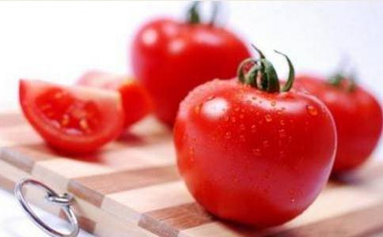

中国式
餐桌上的美味，迷人的外形，鲜嫩的色泽，很多人都喜欢食用，其实西红柿不但味道鲜美，还具有一定的“药效”。西红柿中含维生素c，可以预防感冒，而大量含有的
西红柿是一种很普遍的食物，我国在近些年慢慢地向老龄化迈进，西红柿中有抗衰老和降低胆固醇等辅助预防老年疾病的元素，适合常吃，我国是世界上肝炎常发的大国，西红柿有一定保肝护肝的作用。
2、马铃薯是多用途、富含碳水化合物的食物，受到全世界的关注和青睐，而且制作和食用方法多种多样。马铃薯的蛋白含量与谷物的蛋白含量相同，是一种既可以做菜又可以与粮食媲美的食品。马铃薯性平味甘，中医学上具有和胃调中的作用。它还富含维生素c，带皮食用富含钾元素，新鲜马铃薯含有大约80%的水分和20%的干物质，热量约为100卡，而且不含脂肪。
马铃薯和
茶叶是一种低热能食物，一般是茶质量越好，热能越高。就种类来看，绿茶含热量最高。茶叶所含的水溶性维生素可全部溶解在热水中，所以饮茶可以补充人体需要的多种维生素。此外，茶叶之所以提神，是因为茶叶中含有咖啡因，而咖啡因具有兴奋中枢神经的作用。
饮茶的风气在中国历史悠久。饮茶已成为人们的一种习惯。中国各地都设有不同形式的茶楼、茶馆等，喝茶有喝茶的习惯，各地不同，北京人爱喝花茶，上海人则喜好绿茶。有些地方，喝茶时还喜欢往茶里放些佐料。数千年的茶文化，现今的年轻人应该发扬和传承。
4、菌类——菌类 包括各种耳类和菇类：如
古书中就经常读到的“山珍”，指的就是营养价值超高的菌类。菌类营养丰富，可增强人体免疫力。中国人习惯把菌类做菜或汤，一些常见的菌类还可以随意搭配。对于现在的流感，菌类是适合中国人体质的预防佳品。
5、姜——调味品 姜是种重要的调味品，也可作为蔬菜单独食用，而且还是一味重要的中药材。它可以将自身的辛辣味和特殊芳香渗入到菜肴中，使之鲜美可口。
生姜具有解毒杀菌的作用，中国有着绵长的海岸线，
醋，不仅仅是食用调味品，还有开胃、增食、消毒的营养保健功效。醋中的酵素可以抑制和降低人体衰老过程中过氧化物质自由基的形成，起到抗衰老的效果。在炖煮各类的食物时，最好加一点醋，能促进其中大量蛋白质充分分解，让优质蛋白质被人体吸收得更充分。
自古以来吃醋就是中国人传统的养生之道。在我国，每个地方吃醋的习惯都不同，我国各地都生产醋，品种繁多，风格各异，不仅消耗量大，而且结合医学的养生理论，醋酸有软化血管的作用，在众多传统美食中醋也是最普遍的调味料。
7、在众多的水果之中，苹果可以说是最普遍的一种，苹果果胶属于可溶性纤维，不但能促进胆固醇代谢，有效降低胆固醇水平，生吃苹果还能调理肠胃，因为它的纤维质丰富，有助排泄。另一方面，腹泻的人吃它也有好处，因为苹果酸具收敛作用。苹果有生津润肺，健脾开胃的效应。营养学分析，苹果含有最多果糖，多种有机酸、果胶及微量元素，能扩张血管，有利高血压患者。此外苹果虽然营养丰富，但热量不高，深受减肥者欢迎，老幼皆宜。
苹果在中国自古就有着“平平安安”的寓意，“平安果”象征着平安、祥和，“苹果”当成“平安果”，是取了“苹果”的字音。我国是世界上最大的苹果生产国，多个地区产量大而优质，食用本土盛产的苹果是因地取材的好典范。
8、米饭——碳水化合物 中国人食用
米饭可谓是中国人生活的老祖宗了，尤其是对于大米，南北方人都食用，是我们国家的主要农作物也是国人历史上公认的主食，中国人都有一副适应大米的“铁胃”，同时包括粥，都是对水溶性维生素最好的吸收载体。
9、 黄豆主要成分是蛋白质，尤其是素食主义的蛋白质来源。它们包含了人体所必需的氨基酸，对肌肉的修复和再生，皮肤、头发、指甲的生长都有作用，黄豆蛋白也是最便宜的蛋白质。黄豆的营养价值很高，但直接食用会影响蛋白质的吸收，造成肠胃胀气等现象。食用整粒
比起牛奶，中国人对豆浆，以及以黄豆所培育的一连串豆制品更加情有独钟。尤其是在我国信奉
仲夏时节，正是葡萄大量上市的季节。葡萄营养丰富，鲜嫩味美，酸甜适口，老幼喜食。葡萄中含有人体不可或缺的维生素、矿物质以及少量的蛋白质和脂肪。性平，味甘酸，无毒，历代中医均把它奉为补血佳品。
国医认为，葡萄性平、味甘酸，能补气血，除烦解渴。现代医学则证明，葡萄中所含的多酚类物质有很强的抗氧化活性，可以有效地调整肝脏细胞的功能，抵御或减少自由基对它们的伤害。根茎叶也均可入药，全身是宝。